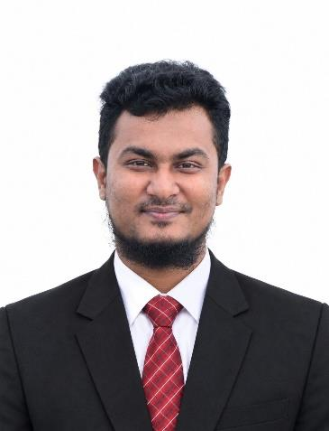
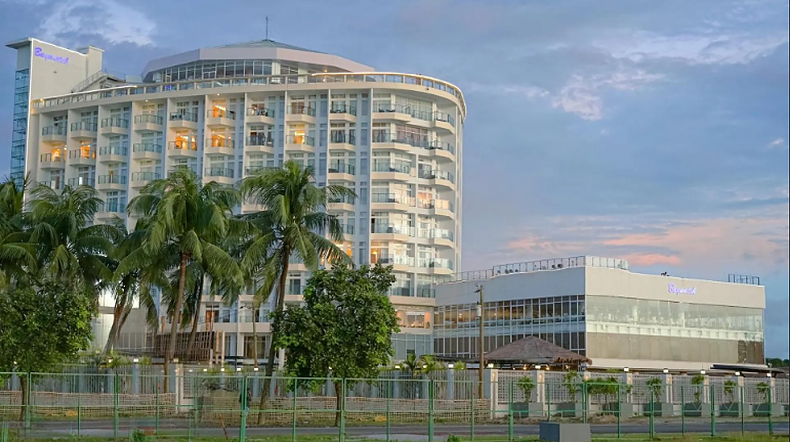
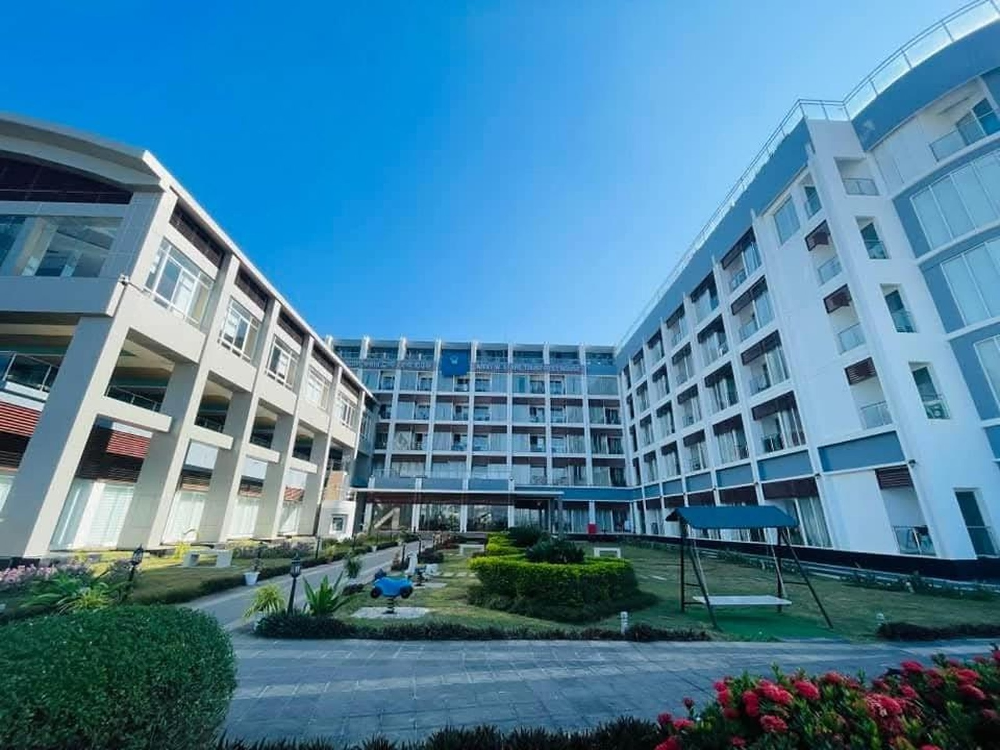

01
Quantity Takeoff & BOQ
Quantity extraction from drawings, measurement and BOQ preparation.
Assistant Manager · Quantity Surveying
Civil Engineer and Quantity Surveying professional with 6+ years of experience supporting construction projects through cost estimation, BOQ preparation, billing, tendering and cost management.

A practical, detail-oriented approach to construction quantities, commercial documentation and project delivery.
I am a Civil Engineer with a B.Sc. in Civil Engineering and more than six years of professional experience across quantity surveying and site engineering. My work focuses on preparing reliable cost estimates, BOQs, bills and variation documents, while coordinating with project, design, planning and procurement teams. I have experience with residential, commercial, resort and power-sector construction projects.
Technical and commercial capabilities developed through project and site-based experience.
Quantity extraction from drawings, measurement and BOQ preparation.
Structural, finishing and steel-work estimates and cost planning.
Subcontractor and client RA bills, IPC bills and final bills.
Rate analysis and working-cost preparation using relevant standards.
Variation preparation, additional-work claims, budgeting and forecasts.
AutoCAD, LBMS, Microsoft Excel, Word and PowerPoint.
Selected projects listed in my professional experience. My involvement included the relevant quantity surveying, costing, billing or site coordination responsibilities described in my CV.

5-star resort development, 10 storeys with one basement and a rooftop sky restaurant, at Inani, Cox's Bazar.
View project details →
G+4 storied building with ancillary works and utility services at Laboni Point, Cox's Bazar.
View project details →Substation building under the project for expansion and strengthening of the power system network in the DPDC area.
14-storey multipurpose building with a 14-storey foundation and ancillary works.
G+6 storied building at Gohail Road, Bogura.
G+6 storied building at Sutrapur, Bogura.
Experience across quantity surveying, billing, tendering and site engineering.
BCL Group · TMSS · January 2020 – July 2022
Site supervision, quality control, daily progress reporting, work scheduling, subcontractor bills, material requisitions and site coordination.
Hajee Mohammad Danesh Science & Technology University
2018 · CGPA 3.14/4.00
Science · Govt. Azizul Haque College
2014 · GPA 5.00/5.00
Science · Armed Police Battalion Public School & College
2012 · GPA 5.00/5.00
For professional enquiries and relevant opportunities, feel free to get in touch by email.
Dhaka, Bangladesh · Civil Engineer & Quantity Surveying Professional